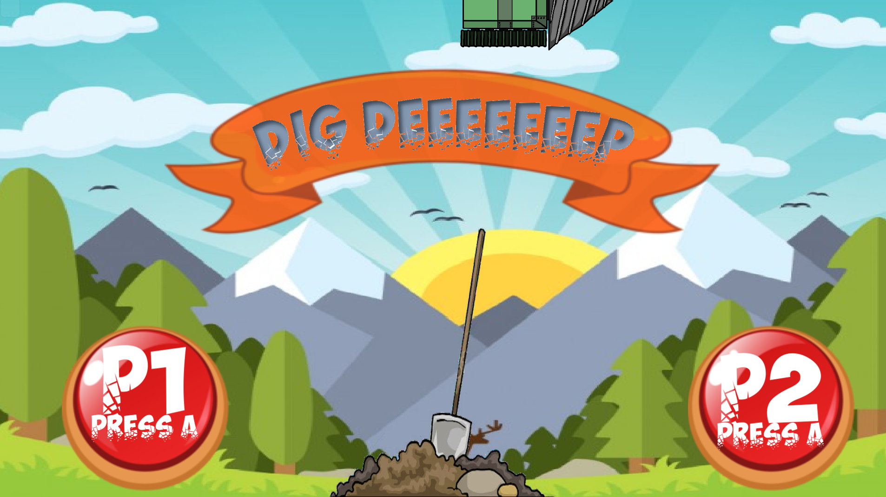
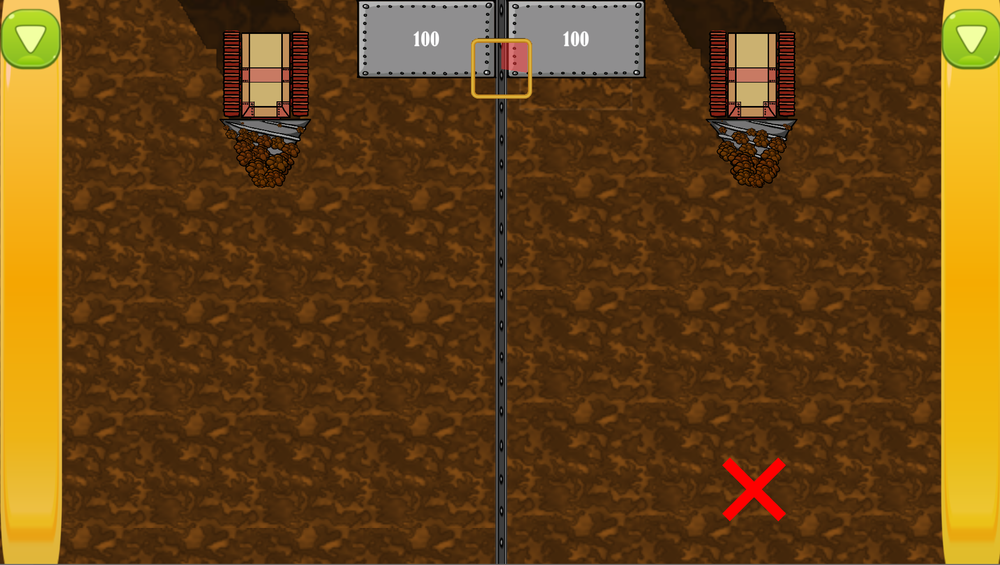

My first gamejam game is Dig Deeeeeeep and yes every single one of the team takes it very seriously that there are 7 E's in that name. It was created for the TUM Semester Game Jam in the summer of 2017. The topic was "Depth", which we obviously took at face value and decided to make a game about digging into the depths of the earth.
It is a 2 player VS game, with elements of Guitar Hero and Twister. It also requires chameleon eyes and about 4 hands to play properly. The gameplay loop goes like this:
You roll the left joystick on your controller either clockwise or counter-clockwise. This makes buttons appear which slowly fall down from the top at the side of the screen. You have to press the buttons on your controller according to the color and direction. The more of these buttons you press the faster you go, but if you press a single wrong one you loose all of your previously gained momentum. On top of that you have to manage three "lanes" on which obstacles can appear and stop you right on your track. To get rid of these obstacles you have to mash the "A" Button 10 times. The player who got deeper into the earth wins. Now if that doesn't sound like a lot of fun and a nice trip to the hospital I don't know what does.
Playing the game was apparently a lot of fun, since we won the 1. place with it. In hindsight there are a lot of things, which we could have done better but I'm still very proud of it. I mean you shouldn't forget that it was made in 48 hours from scratch. We were even invited to showcase it at the TUM Demoday.
 